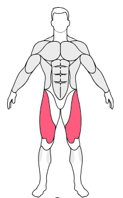
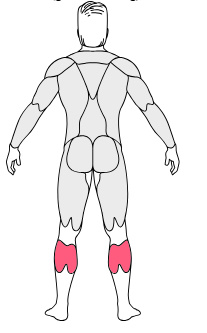

Barbell Squat
Foscued Muscules
- Legs
- Lower Legs
- Shoulders
Instruction
- Stand with your feet shoulder-width apart. Maintain the natural arch in your back, squeezing
your shoulder blades and raising your chest.
- Grip the bar across your shoulders and support it on your upper back. Unwrack the bar by
straightening your legs, and take a step back.
- Bend your knees as you lower the weight without altering the form of your back until your hips
are below your knees.
- Raise the bar back to starting position, lift with your legs and exhale at the top.

Kettlebell Step Up
Foscued Muscules
- Legs
- Lower Legs
- Back
Instruction
- Standing up straight, using a bench as a step, raise one foot onto the bench and hold the kettlebell in the same arm as the straight leg.
- Stand and bring both feet onto the bench. Slowly lower your leg back down to the starting position.
- Repeat.
Barbell Roll Outs
Foscued Muscules
- Legs
- Lower Legs
- Shoulders
Instruction
- Place your legs on the platform with your feet at shoulder width.
- Release the weight and extend your legs fully, without locking your knees.
- Lower the weight until your legs are at a 90° angle (but DO NOT allow your butt and lower back to rise off of the pad. This will put your lower back in a rounded position, which is very dangerous.)
- Raise the weight back to starting position.
Dumbbell Goblet Squat
Foscued Muscules
- Legs
- Lower Legs
- Shoulders
- Back
Instruction
- Hold the weight tucked into your upper chest area, keeping your elbows in. Your feet should be slightly wider than shoulder width.
- Sink down into the squat, keeping your elbows inside the track of your knees.
- Push through your heels while keeping your chest up and return to starting position.
Machine Seated Calf Raises
Foscued Muscules
- Lower Legs
- Back
- Legs
Instruction
- Get comfortable on the machine, then place your lower thighs beneath the padded lever. Place your toes and the balls of your feet onto the foot supports.
- Prevent the weight from slipping forward by gripping the handles, and release the safety bar. Lower the weight until your calves are extended.
- Push your heels up to lift the padded lever and hold the contracted position, then slowly lower back down to the starting position. Repeat.

Barbell Calf Raises
Foscued Muscules
- Lower Legs
- Legs
- Back
Instruction
- Place the bar on your back
- Start with feet flat on the ground
- Extend your heels upwards while keeping your knees stationary, and pause at the contracted position.
- Slowly return to the starting position. Repeat.